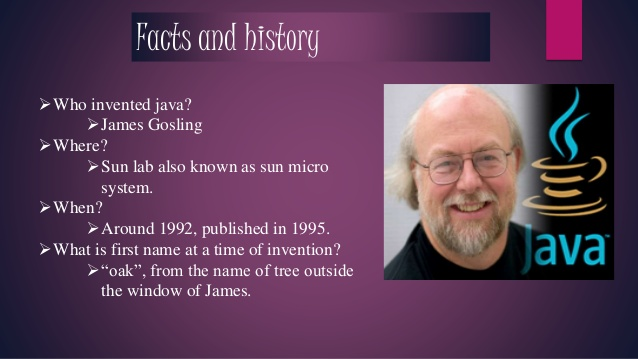
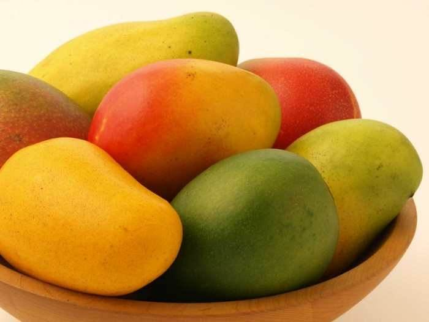
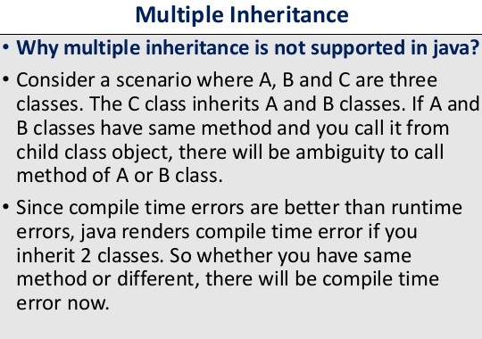
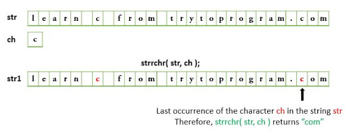

Answer of 1. Java programming language was originally developed by Sun Microsystems which was initiated by James Gosling and released in 1995 as core component of Sun Microsystems' Java platform (Java 1.0 [J2SE]).

Answer of 2. Dennis MacAlistair Ritchie (September 9, 1941 – c. October 12, 2011) was an American computer scientist. He created the C programming language and, with long-time colleague Ken Thompson, the Unix operating system and B programming language. Ritchie and Thompson were awarded the Turing Award from the ACM in 1983, the Hamming Medal from the IEEE in 1990 and the National Medal of Technology from President Bill Clinton in 1999.
Answer of 3. A particular fruit is designated as the national fruit of a country when it fulfills some key fundamental requirements. It must represent a powerful facet of the cultural attributes that a country wants to convey to the world. The fruit must have an enriching part in the country’s history. It should also have a considerable presence in the religious and spiritual heritage of the country. Mango, affectionately called King of Fruits is the National fruit of India. Its sweet fragrance and delectable flavors have won the hearts of many around the world. Mangoes remain one of the most cultivated tropical fruits in the world. As the national fruit of India it represents prosperity, abundance and richness in favor of the country’s image

Answer of 4. Sachin Tendulkar is called the master blaster of cricket. It was on August 14, 1990, when Former Indian cricketer Sachin Tendulkar, popularly known as "Master Blaster" made his presence felt on the field when he scored his first ton in the International cricket.
Answer of 5. Article 343 of the Constitution and the Official Languages Act say that the official language of the Union will be Hindi. ... It is argued that while Hindi is the official language it was never given the status of national language, as India, being a multilingual country, has no single national language.
Answer of 6. Today, the tiger is classified as Endangered in the Red List of Threatened Species published by the International Union for Conservation of Nature (IUCN) and it is estimated that there are only 3,500 tigers remaining in the wild worldwide.

Answer of 7. The checkbox is shown as a square box that is ticked (checked) when activated.Checkboxes are used to let a user select one or more options of a limited number of choices.
Answer of 8. Multiple inheritance is not supported by Java using classes , handling the complexity that causes due to multiple inheritance is very complex. It creates problem during various operations like casting, constructor chaining etc and the above all reason is that there are very few scenarios on which we actually need multiple inheritance, so better to omit it for keeping the things simple and straightforward.

Answer of 9. We should use Id CSS selector if we want to define a style for a unique element. Explanation: CSS stands for cascading style sheets that are used to display the content inside any text or are generally used in the web pages.
Answer of 10: The strrchr() function finds string for the last occurrence of a character and place the pointer to the last occurrence of character.
